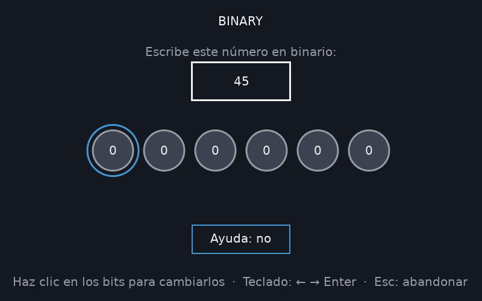
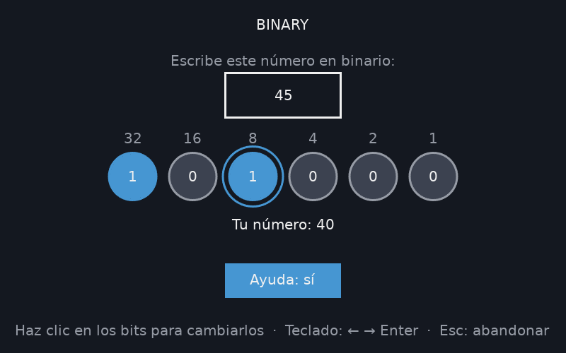
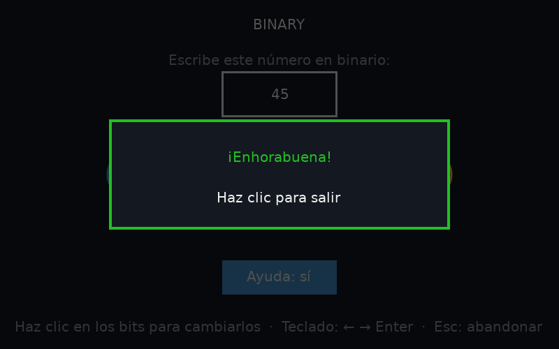

Vectores y
Programación · Sesión 9
Ingeniería Informática · Escuela Politécnica · Universidad de Extremadura
Hoy, un juego con ventana: Binary. Lo nuevo es el entorno gráfico; el vector es lo de siempre. Unos 20 minutos de explicación y a trabajar.
El juego Binary



Hay que formar el número en binario cambiando los bits
La ayuda muestra el peso de cada bit y el número formado
Al acertar, se acaba la partida
Capturas reales del juego, con TAM = 6. Sale un número en decimal, aquí el 45, y hay que formarlo en binario cambiando los bits con el ratón o con las flechas y Enter. Lo primero que vais a hacer es probar el ejecutable que os damos, para ver cómo funciona.
Con el botón de ayuda se ven los pesos de cada bit, 32, 16, 8, 4, 2, 1, y el número que llevamos formado: con el primer y el tercer bit a 1 llevamos 40.
Cuando el número formado coincide con el objetivo, se acaba. Esc abandona la partida.
Recordatorio: de binario a decimal
decimal = suma de bit × 2posición Cada bit se multiplica por 2 elevado a su posición, contando desde la derecha y empezando en 0
posición 9 8 7 6 5 4 3 2 1 0
2pos 512 256 128 64 32 16 8 4 2 1
1 0 21 = 2
1 0 1 22 + 20 = 5
1 0 0 0 1 24 + 20 = 17
1 0 1 1 0 1 25 + 23 + 22 + 20 = 45
1 1 1 1 1 0 1 0 0 0 29 + 28 + 27 + 26 + 25 + 23 = 1000
El juego compara ese valor con el número propuesto: si coinciden, has acertado
Recordatorio rápido, porque el juego va de esto. Para pasar de binario a decimal, cada bit se multiplica por 2 elevado a su posición y se suma todo. La posición se cuenta desde la derecha y empezando en 0: la posición 0 vale 2 elevado a 0, que es 1; la 1 vale 2; la 2 vale 4; cada una el doble que la anterior. Los ceros no aportan nada, así que basta con sumar las potencias donde hay un 1.
El 10: un 1 en la posición 1. 2 elevado a 1 es 2.
El 101: unos en las posiciones 2 y 0. 2 elevado a 2 más 2 elevado a 0: 4 + 1 = 5.
El 10001: unos en las posiciones 4 y 0. 16 + 1 = 17. Los ceros del medio no suman, pero ocupan su sitio: por eso el primer 1 está en la posición 4.
El 101101: 2 a la 5, más 2 a la 3, más 2 a la 2, más 2 a la 0. 32 + 8 + 4 + 1 = 45. Es el número de la partida que habéis visto, con 6 bits.
Uno más grande, con 10 bits: 1111101000. 512 + 256 + 128 + 64 + 32 + 8 = 1000. El método es el mismo, solo hay más potencias que sumar.
Y esto es justo lo que hace el juego: en el vector tenéis unos y ceros, se calcula su valor en decimal y se compara con el número propuesto. Si los bits del jugador valen 45 y el propuesto era 45, ha acertado. Ese cálculo lo vais a programar vosotros; lo vemos con el vector más adelante.
Repaso: una biblioteca es un .h y un .cpp
vector.h
QUÉ hace
constantes, tipos y cabeceras con PRE y POST
vector.cpp
CÓMO lo hace
la implementación de cada operación
Ni se incluye ni hace falta leerlo
binary.cpp
#include "vector.h"
#include "entorno.h"
TVector v;
iniciarVector ( v );
#include "vector.cpp"✕
Se usa con lo que dice el .h: nombre, parámetros, PRE y POST
Repaso rápido, porque hoy hay tres bibliotecas. Cada biblioteca son dos ficheros. El .h dice qué hace: constantes, tipos y cabeceras de las operaciones con su PRE y su POST. En el .h nunca se implementa nada. El .cpp dice cómo lo hace: la implementación.
Quien quiere usar la biblioteca incluye su .h, con comillas porque es nuestra. Con eso el compilador conoce los nombres y los parámetros.
El .cpp nunca se incluye. Eclipse compila todos los .cpp del proyecto por separado y luego los junta. Y para usar la biblioteca tampoco hace falta leerlo: hoy, con entorno.cpp, no lo vais a leer.
Y se usa llamando a sus operaciones, como si fueran nuestras. Todo lo que necesitáis saber está en el .h.
Las piezas del proyecto
vector
el número en binario
vector.h · vector.cpp
pruebasVector
pruebasVector.h · pruebasVector.cpp
entorno
la ventana, el ratón y el teclado
entorno.h · entorno.cpp · usa Allegro
binary.cpp
las reglas del juego
#include
#include
binary.cpp junta las dos: el número y la ventana
Seguimos el orden del guion. Primero la biblioteca vector: guarda el número en binario y sabe operar con él. Es la que vais a completar.
Al lado, sus pruebas, en otra biblioteca. Cualquier tipo nuevo que hagáis seguirá esta estructura: una biblioteca para el tipo y sus operaciones, y otra para sus pruebas.
Luego el entorno: la ventana, el dibujo, el ratón y el teclado. Por debajo usa Allegro, que está instalada en el laboratorio y en la máquina virtual; en Windows puede dar problemas, así que mejor trabajar aquí o en la máquina virtual.
Y binary.cpp, con las reglas del juego, que incluye las dos. Esto es lo más importante de hoy: el vector no sabe nada de la ventana y el entorno no sabe nada de binario. binary.cpp las junta.
La biblioteca vector: un bit por casilla
const int TAM = 6; typedef int TVector[TAM];
más significativo
menos significativo
iniciarVector pone todas las casillas a 0 ponerValorEnVector pone un 0 o un 1 en una posición obtenerValorDeVector devuelve el valor de una posición pesoDePosicion devuelve el peso del bit de una posición calcularValorDeVector devuelve el valor decimal del vector esCorrectoElNumero dice si el vector vale un número dado
El tipo TVector es un vector de TAM enteros, y cada casilla guarda un bit, 0 o 1. Ojo con el orden: el bit más significativo está en la posición 0 y el menos significativo en la última. Este es el 101101.
Estas son las operaciones de vector.h. Todas, salvo una, son de una línea o un for sencillo. La que tiene algo de miga es calcularValorDeVector: pasar de binario a decimal.
De binario a decimal
peso de pos = 2TAM-1-pos pesoDePosicion
bits
bit × peso
Esto es lo que tiene que calcular calcularValorDeVector
Cada posición tiene un peso, que es una potencia de 2. Como el más significativo está en la posición 0, el peso de la posición pos es 2 elevado a TAM-1-pos: 32 para la 0, 1 para la última. Eso es lo que devuelve pesoDePosicion.
Cada bit se multiplica por su peso. Los ceros no aportan nada; los unos aportan su peso.
Animación: se recorre el vector acumulando bit × peso en una suma. 32 + 0 + 8 + 4 + 0 + 1 = 45, que era el objetivo de la partida.
Eso es calcularValorDeVector: un recorrido con un acumulador, como los de la sesión pasada. Y como todo depende de TAM, con más o menos bits debe seguir funcionando. No os doy el código: es lo que tenéis que hacer.
La biblioteca entorno: la ventana
el programa le dice qué mostrar
entornoLeerEvento ( ) → qué ha hecho el jugador clic en un bit, flechas, Enter, ayuda, Esc…
Leed entorno.h con atención. entorno.cpp no hace falta
El entorno se encarga de la ventana, del dibujo y de leer el ratón y el teclado. No sabe nada de las reglas del juego: es lo que dice el propio entorno.h.
El programa le dice qué mostrar: qué valor tiene cada bit, qué bit está seleccionado, y cuándo dibujar y mostrar la pantalla. Dibujar y mostrar van separados: primero se dibuja todo y luego se muestra.
Y en el otro sentido, el entorno le cuenta al programa qué ha hecho el jugador: entornoLeerEvento espera a que pase algo y lo devuelve.
Hay más módulos: entornoIniciar y entornoTerminar para abrir y cerrar la ventana, entornoMensajeFin, y los de la ayuda. Leed entorno.h con atención: con las PRE y POST basta. La implementación, en entorno.cpp, usa Allegro y no hace falta mirarla.
Tipos enumerados
entorno.h
enum TipoEvento {
TClic, // clic en un bit
TAyuda, // botón de ayuda
TIzquierda, // flecha izquierda
TDerecha, // flecha derecha
TEnter, // Enter o Espacio
TEsc, // tecla Esc
TCerrar, // ventana cerrada
TRaton // el ratón cambia de sitio
};
Por dentro son enteros
0 TClic
1 TAyuda
2 TIzquierda
3 TDerecha
4 TEnter
5 TEsc
6 TCerrar
7 TRaton
tipo == TIzquierda ✓ se lee solo
cin >> tipo; ✕ no compila
cout << tipo; ! compila, pero escribe 2
Esto es nuevo. Un tipo enumerado define un tipo con una lista de valores con nombre. TipoEvento son las cosas que puede hacer el jugador. Sirve para que el código se entienda: se escribe TIzquierda en lugar de un código numérico.
Por dentro son enteros, numerados desde 0 en el orden en que se escriben. TIzquierda es un 2.
Se usan para comparar y en un switch. Lo que no se puede es leerlos o escribirlos directamente: cin no compila, y cout sí compila pero escribe el número, no el nombre. Comprobado con g++ 9.4. Es como lo de cout con un vector: compila y no hace lo que esperáis.
binary.cpp: el bucle del juego
binary.cpp · jugar ( ), abreviado
while ( !acabar ) {
refrescarPantalla ( vBinario, objetivo, ayuda );
evento = entornoLeerEvento ( );
switch ( entornoTipoEvento ( evento ) ) {
case TClic:
pCursor = entornoBitEvento ( evento );
entornoMarcarPosicion ( pCursor );
cambiarBit ( vBinario, pCursor );
if ( esCorrectoElNumero ( vBinario, objetivo ) ) {
acabar = true; acertado = true;
}
break;
case TIzquierda: // mueve el cursor
...
}
}
binary.cpp
void cambiarBit ( TVector &v, int pos ) {
if ( obtenerValorDeVector ( v, pos ) == 0 ) {
ponerValorEnVector ( v, pos, 1 );
entornoPonerBit ( pos, 1 );
} else {
ponerValorEnVector ( v, pos, 0 );
entornoPonerBit ( pos, 0 );
}
}
■ biblioteca vector ■ biblioteca entorno
Así se juntan las dos bibliotecas. El juego es un bucle que se repite hasta acabar. En cada vuelta, primero se pinta la pantalla. En verde, lo que es de vector; en azul, lo que es del entorno.
Después se espera a que el jugador haga algo.
Y según lo que haya hecho, un switch sobre el tipo enumerado. El evento no se mira por dentro: se le pregunta al entorno con entornoTipoEvento, y si es un clic, en qué bit con entornoBitEvento. Al hacer clic se cambia el bit y se comprueba si ya es el número.
cambiarBit es el mejor ejemplo de la relación entre las dos: cambia el bit en el vector, que es el dato, y en el entorno, que es lo que se ve. Si vuestro vector no funciona, el juego no funciona aunque la ventana sí. Revisad binary.cpp entero: hay que entender para qué sirve cada función y cada variable.
Ejercicio 1 · Completar la biblioteca vector
Probar el ejecutable binary_ejecutable.zip Tamaño del problema y complejidad vector.h Implementar las operaciones vector.cpp Llamar a las pruebas desde el main binary.cpp Comprobar las pruebas consola Jugar y cambiar TAM vector.h
vector.h
/*
* PRE: -
* POST: v tiene todas las casillas a 0
* Complejidad: // TODO
*/
void iniciarVector (TVector &v);
vector.cpp
int calcularValorDeVector ( TVector v) {
// TODO implementar;
return -1;
}
binary.cpp
#include "vector.h"
#include "entorno.h"
#include "pruebasVector.h"
...
int main() {
...
pruebasVector ( );
...
}
Consola · salida real, sin implementar (abreviada)
Inicio - pr_obtenerValorDeVector
Error en la posición 0
...
Inicio - pr_calcularValorDeVector
Error con el valor 0: devuelve -1
Error con el valor 10: devuelve -1
Error con el valor 15: devuelve -1
Fin - pr_calcularValorDeVector
vector.h
// Número de bits del juego
// (el entorno admite como máximo 8)
const int TAM = 6;
Con otro TAM, el juego debe seguir funcionando
Primero, probad el ejecutable que os damos para entender el juego. Está generado en la máquina virtual: en otros sistemas puede no funcionar.
En vector.h solo falta escribir el tamaño del problema y la complejidad de cada operación.
En vector.cpp está todo con // TODO. Casi todas son inmediatas; la difícil es calcularValorDeVector, lo que acabamos de ver. pesoDePosicion os puede ayudar.
Ojo: el guion dice que el main llama a las pruebas, pero en el proyecto el main solo juega. Para ejecutar las pruebas, añadid el include de pruebasVector.h y la llamada a pruebasVector() al principio del main.
Esta es la salida real del proyecto tal como se entrega: fallan todas. Cuando dejen de salir errores, la biblioteca está bien. Cuidado: las pruebas de calcularValorDeVector y esCorrectoElNumero están pensadas para 4 bits. Con TAM = 6, aunque el código esté bien, dicen que 1010 vale 40 en lugar de 10, porque con 6 bits es 101000. Comprobado con la versión del profesor: probad con TAM = 4.
Con las operaciones bien hechas, el juego funciona sin tocar nada más. Probad a cambiar TAM: con más o menos bits debe seguir funcionando, hasta 8, que es lo que admite el entorno.
Ejercicio 2 · Ampliaciones a Binary
a) Mostrar el valor decimal actual: ya lo hace el botón de ayudab) Contar los cambios de bits que se hacenc) Terminar si no se acierta antes de n cambiosd) ¿Y si el objetivo pudiera ser 0? Que el juego acabe en ese momentoe) Empezar con los bits al azar, no todos a 0f) Calcular el mínimo de cambios y terminar si se superag) ¿Qué cambia si el bit menos significativo está en la posición 0?h) ¿Y en ternario (0, 1, 2), en octal (0-7) o en hexadecimal?
Con el ejercicio 1 terminado, haced algunas de estas. La a) ya viene hecha en esta versión del proyecto: el botón de ayuda muestra el número formado. Las g) y h) son para pensar: qué habría que cambiar en vector y qué en el resto.
Ejercicio adicional · La criba de Eratóstenes
Proyecto nuevo: los primos hasta 10000
El vector no guarda los números: guarda si cada posición está tachada o no
Un módulo que aplica la criba, otro que dice si n es primo, y un main que los use
Para quien termine. Se ponen los números del 2 al límite, aquí 20.
El primero sin tachar, el 2, es primo. Se tachan todos sus múltiplos, saltando de 2 en 2.
El siguiente sin tachar, el 3, es primo. Se tachan sus múltiplos, de 3 en 3. Con 20 ya no hay más que tachar.
Los que quedan sin tachar son los primos. En el ejercicio, hasta 10000. La clave está en el tipo: las casillas no guardan los números, guardan si la posición está tachada. Los detalles, en el guion.